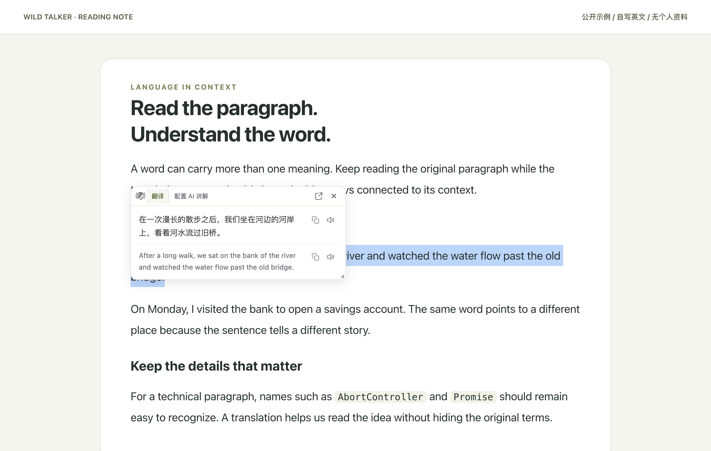
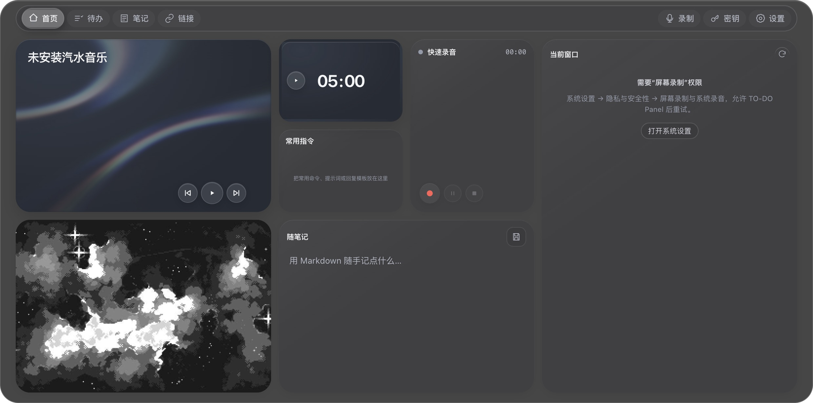
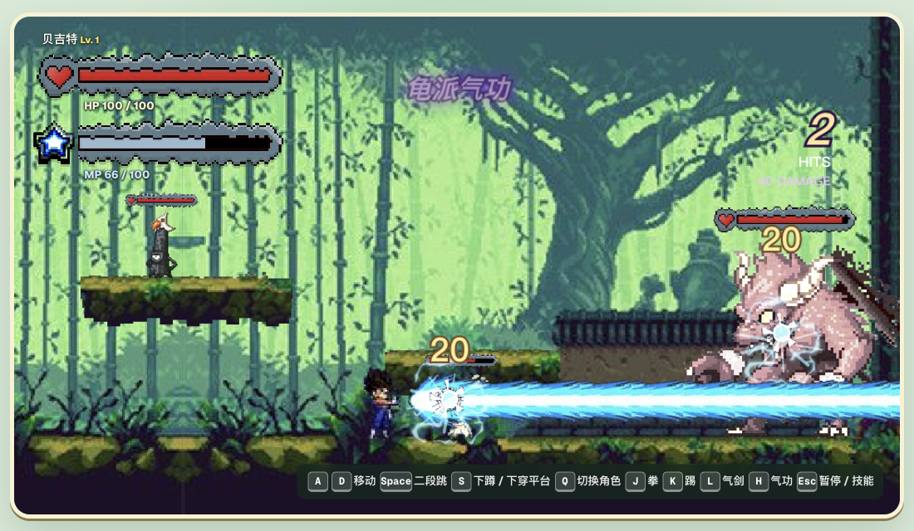

LOADING...
PLAYER ONE
YEMIN WORLD
你好，我是张俊豪。
也可以叫我 Yemin。做 macOS 工具、浏览器扩展和交互网页，把好奇心做成可以使用的作品。
GITHUB ↗
小红书 ↗
CLICK
THE DIAL
EXPLORE MY WORK
TOOLS, INTERFACES & A LITTLE PLAY
POP
↗
划词翻译 · 截图 OCR

WILD TALKER
↗
双语翻译 · AI 阅读
GLASS UI
↗
玻璃材质 · 可复用 Skill
MUSIC EXPLORER
↗
实时 3D · 音乐概念站

TO-DO GLASS
↗
macOS 玻璃面板改造

WONDERS EX
↗
四关横版动作原型
MOSSLUME
↗
像素游戏 · 3 张图片
READY TO PLAY?
MEET YEMIN ON GITHUB
GAME GALLERY / 03 IMAGES
MOSSLUME
×
森林概念图
←
游戏实机
森林概念
标题画面
→